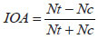

Services on Demand
Article
 Portuguese (pdf)
Portuguese (pdf)  Article in xml format
Article in xml format
 Curriculum ScienTI
Curriculum ScienTIIndicators

Related links
 Cited by Google
Cited by Google  Similars in SciELO
Similars in SciELO  Similars in Google
Similars in Google  uBio
uBio Share

 Permalink
PermalinkNeotropical Entomology
Print version ISSN 1519-566X
Neotrop. entomol. Vol. 39 no. 6 London Nov. 2010/Dec.
http://dx.doi.org/10.1590/S1519-566X2010000600026
PUBLIC HEALTH
Effect of water quality in the cycle of life and attraction to oviposition of Aedes aegypti (l.) (Diptera: Culicidae)
The effect of water quality in the life cycle and in the attraction for the egg oviposition of Aedes aegypti (l.) (Diptera: Culicidae)
Edward B BallI; Carlos R M FernandesI; Joseph T ShahII; Eraldo M FreitasIII; Keliana D SantosI
(I) Department of biology. State University of Paraíba, Ganesh Arruda Street s/n, 58109-753 Campina Grande, PB, Brazil; ebarbosa@uepb.edu.br; carivebio@yahoo.com.br; kelianads@yahoo.com.br
II Department of chemistry. State University of Paraíba, Ganesh Arruda Street s/n, 58109-753 Campina Grande, PB, Brazil; macta@uepb.edu.br
ABSTRACT
The present research aimed at evaluating the influence of the water quality in the life cycle and attraction of Aedes aegypti (l.) females to oviposit using different sources of water (raw sewage, effluent of UASB reactor, effluent of polishing lagoon, effluent of anaerobic filter, rain water and chlorinated-water). The immature development time and survivorship were evaluated on a daily basis in two distinct feeding systems (with and without food). The quality of the water was shown to affect the egg and larval stages, but not the pupal or the adult. In the absence of food, the development was observed in rain water and chlorinated-water. Immature development was faster in water sources from raw sewage, although with the lowest survivorship (37.3%). Free-choice tests indicated that females preferred to lay most of their eggs on water collected from the effluent of the UASB reactor, achieving the highest oviposition activity index (OAI) of 0.57. In non-choice tests, females laid larger batches of eggs in water collected from anaerobic filters (204.8 eggs), with the lowest number of eggs being laid on de-chlorinated water (37.3 eggs). It can be concluded that a. aegypti does not demonstrate any particular preference to lay eggs on clean water. This has serious implications for developing strategies to manage populations of this important vector in urban areas as it was shown to lay eggs and successfully develop on several different sources of water.
Key words: Vector, dengue, aquatic development, biology
Aedes aegypti (L.) is the most important mosquito in epidemiological records from yellow fever and of the four serotypes of the dengue virus (VDen-1. Vden-2,-3 and VDen VDen-4) (Silva et al. 1998, Lozovei 2001, Forattini 2002). It is widely distributed, developing its activities in the same environments and schedules of human populations (new 2002), especially those who live in regions with poor infrastructure conditions, which favors the development and establishment of the vector and, consequently, the viral serotypes by he served.
Understanding the bio-ecology of populations of a. aegypti is indispensable for the development of control strategies. Such studies, when assessing the development patterns of the different phases of the life cycle of insects, contribute to the understanding of their population dynamics and assist in determining control strategies. In the case of a. aegypti, can still do predict the risk of occurrence of dengue epidemics based on monitoring of its distribution and abundance (Tilak et al 2005).
Environmental factors associated with the insect's life cycle can indicate the appropriate environments for oviposition and development. The immature development of a. aegypti can be influenced by the type and quality of water reservoirs, which makes it essential to conduct studies of attractiveness for oviposition and evaluation of biological characteristics in order to understand the factors related to the recognition of collections of water suitable for its development and reproduction. Second Varejao et al. (2005), this vector reproduce in reservoirs of clean water, although it can adapt to new situations imposed by man, adapting the breeding grounds. It has been shown that the salinity of the water and the presence of fecal coliforms and bacteria are factors affecting the oviposition by this bug, by decreasing or increasing the same, respectively (Navarro et al. 2003).
The dengue control constitutes a great challenge, because a. aegypti is adapted to the urban environment, so that to meet its biology is necessary to study the insect relationship with man and with the variables of the environment into which the species is inserted. Thus, this work aimed to evaluate the influence of quality of water in the cycle of life and attraction to oviposition of a. aegypti
Material and methods
The survey was conducted using samples of populations of a. aegypti collected in the New Brasilia, municipality of Campina Grande, PB (07° 13 ' 32 "S, 35° 54 ' 15" W). Mosquito collections and the establishment of laboratory strains occurred between November 2005 and July 2006. The lineage of the mosquito was obtained from eggs collected in 50 ovitrampas installed on intra and peridomestic habitats of randomly chosen households in ten blocks, where five traps were installed by block.
Maintenance technique of Aedes aegypti in the laboratory. The maintenance of a. aegypti and the laboratory bioassays were conducted in air-conditioned room (26 ± 2ºc and photophase of 12:00). The reeds of eucatex containing eggs of a. aegypti from the field were placed to dry for 48 hours and then wrapped in white plastic trays (40 x 27 x 7.5 cm) with a third of its capacity filled with desclorada water. After hatching, feed for ornamental fish (Alcon/Goldfish growth) was offered at a rate of 100 mg/tray, being the same covered with fine mesh screen. The pupae after sexed, were kept in 250 ml disposable cups in cages of maintenance of adults (40 cm x 40 cm x 30 cm), and kept on density of 200 individuals (100 males and 100 females).
The adults were fed with honey 20% solution; females were allowed repast in blood quail, Coturnix japonica, for 30 minutes, three times a week. After the repast, a disposable Cup to 250 ml with water desclorada with a plastic funnel covered with a filter paper to serve as a substrate for oviposition, was introduced in each cage.
Obtaining water samples for testing. Water samples were collected at the Experimental Station of sewage biological treatment (EXTRABES), Water and sewage company of Paraíba (CAGEPA), located in the neighborhood of the drum, in Campina Grande, PB. The material was retrieved from a system comprising a sequence of sewage treatment consisting of: a) a tank of equalization, received raw sewage from urban collection network of Campina Grande; b) a ballast UASB (Upflow Anaerobic Sludge Blanket) as anaerobic treatment plant, constructed of fiberglass with a capacity of 5 m3; c) an anaerobic filter baffles, also of fiberglass and capacity of 1 m3 (Silva et al. 2005); and d) polishing pond consists of five lanes of 10 m x 1 m x 65 cm in masonry. In addition to these collection points, were also used and samples) rainwater stored in tanks and finally as control, f) treated water and desclorada, in desclorador activated carbon filter (5 µ filtration degree), coupled to the water tap.
Development of a. aegypti in six water conditions. The development of the mosquito in the six types of water was evaluated in the presence and absence of food. Each treatment had five repetitions, each of them consisting of white plastic tray (40 cm x 27 cm x 7 cm), covered with a fine mesh screen, containing 1 L of water and 200 neonatas larvae of a. aegypti. For the bioassay with food, were offered 100 mg of feed for ornamental fish (Alcon/Goldfísh growth) for the paper tray. To the egg stage, 10 were evaluated for treatment postures, packed in Petri dishes (10 cm x 2 cm), being considered unviable eggs that didn't rise to larvae after 10 days. The adults were kept in cages for mating (20 cm3), each containing ten couples and repeated five times. Were evaluated on a daily basis, the period of development, the feasibility and duration of the phases of egg, larva and pupa, and the longevity and fecundity of adults.
Physico-chemical Characterization of different sources of water. During the bioassays were separated three water samples in different conditions, in three moments: 1) before the beginning of the bioassay; 2nd) on the third day of the larval period; and 3) at the end of the larval period, which were sent for analysis, physical chemistry, by the research group of the Research program on basic sanitation, PROSAB, on Biological wastewater treatment station (EXTRABES/CAGEPA). They analyzed the six conditions of water having as a reference the physical and chemical indexes as method of Standard Methods for the Examination of Wastewater (Apha 1998) (Table 1). Also daily temperature readings were carried out through the use of thermometer with gauging of 0ºc to 60ºc and pH, through digital pH meter.
Oviposition attraction of diferenets water sources. The attractiveness of different samples of water for mosquito oviposition was assessed by considering two scenarios: 1) multiple choice and 2) without choice.
Multiple choice test. This test was evaluated for oviposition attraction, considering the random block experimental design with six treatments and six replications, adopting the desclorada water control. Each repetition was constituted by a cage for mating with the six water samples and ten pairs of a. aegypti. Couples was offered a 20% solution of honey and allowed the blood repast in quail for a period of 15 min for three days interspersed. After the third day of repast, were distributed inside the cages the six different water samples contained in disposable cups 250 ml. In each Cup was placed a plastic funnel covered with a filter paper to serve as a substrate for oviposition. After the third day of blood repast, daily evaluations, during a period of 72 hours, and every 12:00 am, removed the paper and counted the number of eggs with the aid of a stereoscopic microscope.
Test without choice. This test was evaluated for oviposition attraction following experimental design completely randomized design with six treatments and six replications, consisting of a wooden cage telada (20 cm3), containing ten pairs of a. aegypti and only one substrate for oviposition with a water condition. The evaluations were daily, followed by multiple-choice test procedures.
Statistical analysis. Biological data relating to the stages of larva and pupa were analyzed in factorial scheme 2 x 6, two feeding regimes and six water conditions. For the egg and adult stages, the completely randomized experimental design. To assess the preference for oviposition, the experimental design was randomized blocks for the multiple-choice test, while completely randomized design for test without choice. The experimental results were submitted to analysis of variance and averages compared by Tukey test (P > 0.05). To evaluate the attractiveness of water collections for oviposition of a. aegypti has been given the active layer index (IOA), given by the formula of Kramer & Mulla (1979):

Where Nt = number of eggs in the test solution and Nc = number of eggs in the control solution. According to these authors, the IOA > + 0.3 indicates attractiveness, while IOA < -0.3 indicates that the test solution is oviposition repellent.
Results
Physico-chemical Characterization of different sources of water. Average temperatures of the different water sources on which the development of larva and pupa stages of a. aegypti ranged from 25.7 to 26.1° C, with little difference between the treatments, while the pH neutral variation introduced the slightly Basic (Tables 2 to 4). Physico-chemical analysis of different water sources tested (Tables 3 and 4) showed a gradual reduction of the availability of dissolved oxygen as larval development occurred, indicating higher oxygen consumption caused by the biological digestion of organic matter, probably carried by the larvae of a. aegypti and microorganisms there. The chemical oxygen demand (COD) had increased in all treatments, justifying the higher biomass production in relation to consumption; the turbidity was higher in treatments receiving rations, probably as a consequence of the greater quantity of dissolved substances in the middle.
The electric conductivity presented higher in those substrates with higher pollution degree, demonstrating greater concentration of dissolved ions. The decrease of the values of orthophosphate reveals that there has been greater nutrient consumption and feeding organisms and consuming oxygen in the Middle, especially increasing water supplies to feed the larvae (Tables 3 and 4).
Mosquito Development in six different sources of water. Significant differences were observed with regard to the period of embryonic development and viability among the six studied media. Desclorada water proved to be more favorable to the embryonic development of a. aegypti, providing the shortest development time and greater viability (Table 5).
There was significant interaction between water sources and the diet regarding duration and larval survival (Table 5), but not for the duration and survival of pupae. The larvae showed smaller periods of development when fed with fish food, leading to 6.3 the 9.7 days to complete their development, compared to 7.4 to 10.4 days for larvae maintained without power supply. Larval survival also decreased significantly according to the aquatic environment and diet. There was no full development when the larvae were kept without food in rain water and desclorada water. This diet also significantly decreased the survival when the larvae were kept in water from the effluent from UASB reactor and in anaerobic filter effluent water, with 48.3% values and 44.2%, 83.5% and 63.0% against when in the presence of food in the same water sources. In raw sewage and effluent polishing pond, larval survival was lower when offered to feed the larvae (Table 5).
Comparing the larval development among the collections of water, there was an increase in the period of development with the increase in the degree of purity of water, regardless of whether or not food supply, being observed in anaerobic filter sewage, rainwater and water desclorada much time to complete development. Larval survival was lower in raw sewage when added to water, feed and higher when the larvae were kept on polishing pond water without food supply. However, despite the low larval survival in the absence of food in raw sewage, effluent from UASB anaerobic filter reactor, it was possible to complete larval development, which did not occur in rain water and desclorada water, where there were 100% mortality in the early stages of development (Table 5).
The pupal stage suffered no significant effects with respect to the duration and survival, independent of larval diet. The average duration was two days, while survival was high in all conditions, treatment of 98.9% to 100% for the pupae from larvae fed with rations, and 98.4% to 99.8% for those that originate from non-fed larvae.
Significant difference was observed regarding the longevity of males whose larvae develop in water desclorada, when compared to those created in polishing pond water. However, no differences were found regarding the longevity and fecundity of females of a. aegypti (Table 6).
Oviposition attraction in different sources of water. Significant differences were found with respect to the average number of eggs laid in different ways when females were given the chance to choose between the six means, between the water ballast UASB effluent and water desclorada. The calculation of the active layer (IAO) showed that with the exception of anaerobic filter water (IAO = 0.09), other collections of water were attractive to oviposition of a. aegypti, highlighting the water collected from UASB reactor, where the IAO was 0.57. When the females were confined in cages with only one of the samples of water, a significant difference was detected between treatments, with the largest number of eggs in anaerobic water filter desclorada (Table 6).
Discussion
The analysis of the development of a. aegypti in collections of water with different pollution degrees showed that the vector is able to develop in water with high levels of pollution, as happened in raw sewage, effluent from UASB reactor, anaerobic filter and polishing pond, confirming the tolerance to pollutants reported for species of mosquitoes, mainly for the sinantrópicas and anthropogenic (Consoli & Oliveira 1994).
The joint effect of water quality and the addition of food in the larval stage of a. aegypti resulted in the lengthening of the period of development (Table 4), as the quality of water, with or without food was improving and decreasing its turbidity (Tables 2 and 3). The turbidity is a parameter which, among others, indicates the low penetration of light in the water body. As the larvae of a. aegypti are fotofóbicas, they developed more rapidly in the collections of water that had higher turbidity. According to Consoli & Oliveira (1994), that fact may have relevance in the case of urban vectors as the Culex quinquefasciatus Say and a. aegypti, which can thus develop in sewage with little or no light.
Another factor that may have contributed to the decrease in larval development period registered to larvae in raw sewage and effluent from UASB reactor, with or without the addition of food, was one of the largest concentrations of nutrients, mainly organic matter such as proteins, carbohydrates and lipids, corroborating the claim bordering Kruger et al. (2002) that the length of the development cycle as well as the viability of immature, can be evaluated by the available supply in the Middle, which can be confirmed by 100% mortality occurred in larvae held in rain water and desclorada water without food.
The low survival of larvae in raw sewage may be associated with lower surface tension and viscosity of the water. According to Edwards (1998), the surface tension of water decreases with increasing temperature and amount of organic substances and, when reduced to very low levels, can harm communities living on the surface of the water. On the other hand, viscosity, water capacity to offer resistance to movement of organisms, increases with the concentration of dissolved substances. This condition may have occurred in the bioassays gifts because were developed under conditions of high temperature, approximately 25° C to 26° C in water and 26ºc in the environment, and the high levels of organic matter, electrical conductivity and total nitrogen of raw sewage (Tables 3 and 4) may have hindered the maintenance of larvae near the surface of the water, limiting the gas exchange of the same at the same time increased the energy expenditure for food, which may have contributed to the larval mortality.
According to Lee et al. (1993), females of a. aegypti are attracted to containers where the water contains high levels of pollution. However, the present results show that the higher the degree of water pollution, increased the attractiveness of the same to females, such as UASB reactor water, where the IAO was 0.57. Show that the females put on average, a higher number of eggs (415.0 eggs) in comparison with the water desclorada (113.2), in multiple-choice test (Table 5). So, for a. aegypti, the water quality is not associated with the degree of pollution, but the conditions that the medium presents for the development and survival of immature.
Physical, chemical and biological factors, such as light, temperature, salinity, organic matter, microorganisms and other substances, which favour the development of immature serve as stimuli to the female in the selection of site for oviposition (Consoli & Oliveira 1994). It should be emphasized that the little light penetration caused by high turbidity and increased presence of dissolved substances (Table 3) were conditions found in raw sewage, effluent from UASB reactor, polishing pond effluent and effluent anaerobic filter, which did not occur in water desclorada. This may have contributed to the lower number of eggs deposited and, consequently, to the slightest attractiveness for this condition of the water, as noted when females were subjected to multiple choice tests and without choice (Table 6).
The selection of suitable place for oviposition is essential to the distribution and the establishment of populations of a. aegypti and epidemiological significance on airing of the yellow fever virus and dengue fever. Unlike the established knowledge, females of a. aegypti were attracted not only by sources of clean water, indicating that the insect features flexibility in accepting posture substrates which exhibit variation in its quality. This characteristic gives the vector great ability to adapt to different environmental situations (Tauil 2002), including those considered unfavorable, as polluted water sources, e.g.. raw sewage and waters of UASB reactor used in this research.
This information is important for the guidance of control actions, as it points to the need for inspection of all kinds of collections of water during surveys of breeding grounds for larvae, especially in those areas with less infrastructure, where sewage runs in the open next to the households and may contaminate containers that function as usual sites of oviposition.
Thanks
The Health Department of the municipality of Campina Grande and the third Regional Core of health and the National Health Foundation (FUNASA) by the support offered for the premises of the traps to collect the eggs of a. aegypti. The PROSAB/EXTRABES for the collaboration in the analysis of the physical and chemical parameters of different types of water used in the research. The Pan American Health Organization/PAHO and health surveillance Secretariat/SUS/MS resources that helped make this research.
References
Apha AWWA. WPCF (1998) Standard methods for the exanimations of water and wastewater. 20th ed, Washington, DC. American Public Health Association. American Water Works Association, Water Pollution Control Federation, 1155p. [ Links ]
Consoli R G B, R L (1994) primary health importance Brazil gnats. Rio de janeiro, Editora Fiocruz, 4 p. [ Links ]
Edwards (F) (1998) Foundations of Limnology. Interciencia Rio de Janeiro, London: fishing news books. [ Links ]
Forattini op (2002) Medical Culicidologia. São Paulo, Edusp, 860p. [ Links ]
Kramer LW, Mulla J M (1979) Oviposition attractants and repellents of mosquitoes: oviposition responses of Culex mosquito to organic infusions. Environ 8 Entomol: 1111-1117. [ Links ]
Kruger R F, Rajan P B, Ch C J B, Costa P R P (2002) development of Synthesiomyia nudiseta (Diptera: Muscidae) in the laboratory. Iheringia G 25-30 92: Zool. [ Links ]
Lee J, Scott M A N, Borsato, V D M R B, F (1993) Aedes (Stegomyia) aegypti and the associated culicidofauna in urban area in the South of the country. Rev Public Health 27:326-330. [ Links ]
Lozovei L (2001) Culicídios (mosquitoes), p. 59-104. In Marcondes C B (ed.), medical and Veterinary Entomology. 1st ed São Paulo, Atheneu, 432 p. [ Links ]
Christmas D (2002) bio-ecology of Aedes aegypti. 64:205-207 biological. [ Links ]
Navarro D M F and S, P, R P J Potting, Bashir the C, S Fital J F (2003) The potential effects of repellent or attract different water types on oviposition in Aedes aegypti l. (Diptera, Culicidae). J Appl Entomol 127:46-50. [ Links ]
Scott H H G R G Liraik, S (1998) Methodology of creation, maintenance and storage of adult Aedes aegypti eggs in the laboratory. Rev Patol Trop 27:51-63. [ Links ]
Silva V F, Shah J T, Vieira, K D F F Santos (2005) anaerobic Treatment of domestic sewage for fertirrigation. Rev Bras Eng Agricultura Amb 9:186-190. [ Links ]
Tilak R, Gupta M V, Suryam M V, J D, Gupta Yadav B K K D (2005) the laboratory investigation into oviposition responses of Aedes aegypti to some common household substances and water from conspecific larvae. Med J Arm For India 61:227-229. [ Links ]
Tauil P L (2002) critical aspects of the control of dengue fever in Brazil. CAD Public Health 18:867-871. [ Links ]
Varejao J B M, Santos C B, Rezende H R, Bevilacqua L C, Falqueto A (2005) Breeding of Aedes (Stegomyia) aegypti (Linnaeus, 1762) in native bromeliads in the city of Vitoria, ES. Rev Soc Trop Med 38 Brazil: 238-240. [ Links ]
Received 11/VII/08.
Accepted 10/V/10.
Edited by Eunice Galati-FSP/USP